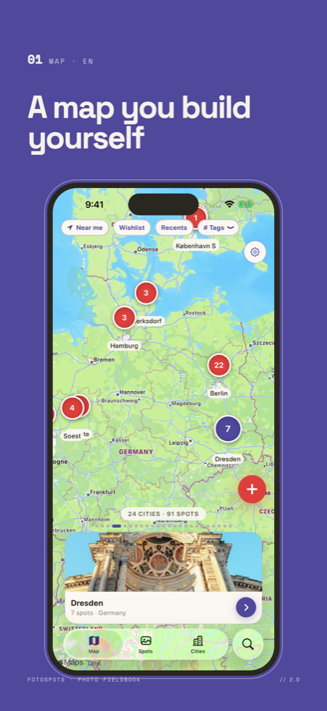

Photo Fieldbook
A map of places worth shooting.
Fotospots turns the places you notice into a map you build yourself: spots you have already stood in, and the ones still on your wishlist.
Get the app
Free on the App Store · iPhone and iPad
